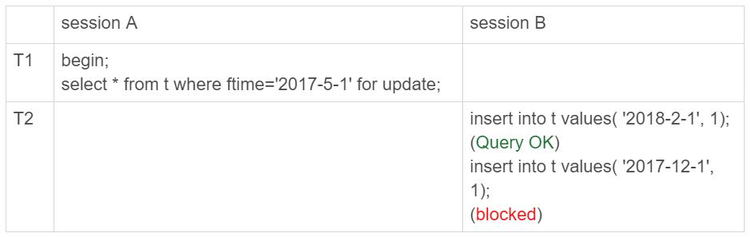
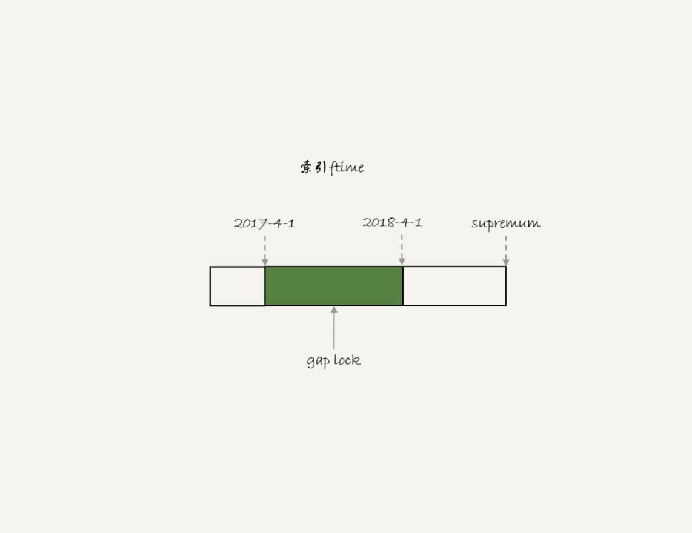
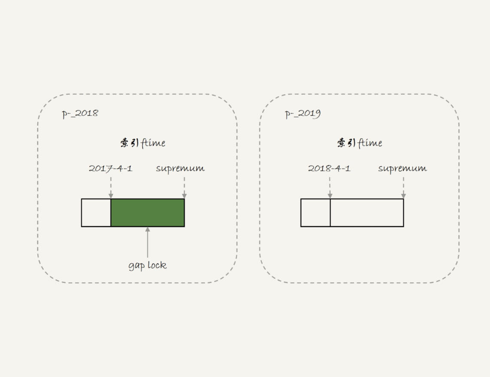
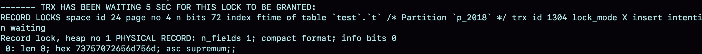
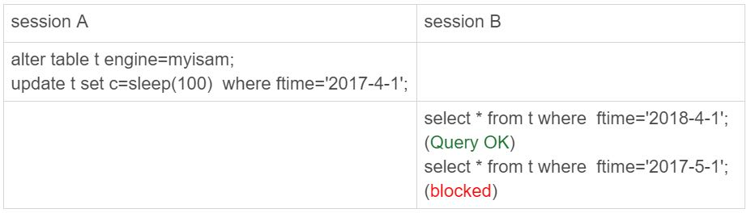
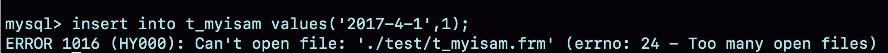
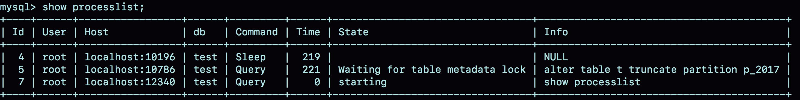

我经常被问到这样一个问题：分区表有什么问题，为什么公司规范不让使用分区表呢？今天，我们就来聊聊分区表的使用行为，然后再一起回答这个问题。
分区表是什么？
为了说明分区表的组织形式，我先创建一个表t：
CREATE TABLE `t` (
`ftime` datetime NOT NULL,
`c` int(11) DEFAULT NULL,
KEY (`ftime`)
) ENGINE=InnoDB DEFAULT CHARSET=latin1
PARTITION BY RANGE (YEAR(ftime))
(PARTITION p_2017 VALUES LESS THAN (2017) ENGINE = InnoDB,
PARTITION p_2018 VALUES LESS THAN (2018) ENGINE = InnoDB,
PARTITION p_2019 VALUES LESS THAN (2019) ENGINE = InnoDB,
PARTITION p_others VALUES LESS THAN MAXVALUE ENGINE = InnoDB);
insert into t values('2017-4-1',1),('2018-4-1',1);
我在表t中初始化插入了两行记录，按照定义的分区规则，这两行记录分别落在p_2018和p_2019这两个分区上。
可以看到，这个表包含了一个.frm文件和4个.ibd文件，每个分区对应一个.ibd文件。也就是说：
- 对于引擎层来说，这是4个表；
- 对于Server层来说，这是1个表。
你可能会觉得这两句都是废话。其实不然，这两句话非常重要，可以帮我们理解分区表的执行逻辑。
分区表的引擎层行为
我先给你举个在分区表加间隙锁的例子，目的是说明对于InnoDB来说，这是4个表。

我们初始化表t的时候，只插入了两行数据， ftime的值分别是，‘2017-4-1’ 和’2018-4-1’ 。session A的select语句对索引ftime上这两个记录之间的间隙加了锁。如果是一个普通表的话，那么T1时刻，在表t的ftime索引上，间隙和加锁状态应该是图3这样的。

也就是说，‘2017-4-1’ 和’2018-4-1’ 这两个记录之间的间隙是会被锁住的。那么，sesion B的两条插入语句应该都要进入锁等待状态。
但是，从上面的实验效果可以看出，session B的第一个insert语句是可以执行成功的。这是因为，对于引擎来说，p_2018和p_2019是两个不同的表，也就是说2017-4-1的下一个记录并不是2018-4-1，而是p_2018分区的supremum。所以T1时刻，在表t的ftime索引上，间隙和加锁的状态其实是图4这样的：

由于分区表的规则，session A的select语句其实只操作了分区p_2018，因此加锁范围就是图4中深绿色的部分。
所以，session B要写入一行ftime是2018-2-1的时候是可以成功的，而要写入2017-12-1这个记录，就要等session A的间隙锁。
图5就是这时候的show engine innodb status的部分结果。

看完InnoDB引擎的例子，我们再来一个MyISAM分区表的例子。
我首先用alter table t engine=myisam，把表t改成MyISAM表；然后，我再用下面这个例子说明，对于MyISAM引擎来说，这是4个表。

在session A里面，我用sleep(100)将这条语句的执行时间设置为100秒。由于MyISAM引擎只支持表锁，所以这条update语句会锁住整个表t上的读。
但我们看到的结果是，session B的第一条查询语句是可以正常执行的，第二条语句才进入锁等待状态。
这正是因为MyISAM的表锁是在引擎层实现的，session A加的表锁，其实是锁在分区p_2018上。因此，只会堵住在这个分区上执行的查询，落到其他分区的查询是不受影响的。
看到这里，你可能会说，分区表看来还不错嘛，为什么不让用呢？我们使用分区表的一个重要原因就是单表过大。那么，如果不使用分区表的话，我们就是要使用手动分表的方式。
接下来，我们一起看看手动分表和分区表有什么区别。
比如，按照年份来划分，我们就分别创建普通表t_2017、t_2018、t_2019等等。手工分表的逻辑，也是找到需要更新的所有分表，然后依次执行更新。在性能上，这和分区表并没有实质的差别。
分区表和手工分表，一个是由server层来决定使用哪个分区，一个是由应用层代码来决定使用哪个分表。因此，从引擎层看，这两种方式也是没有差别的。
其实这两个方案的区别，主要是在server层上。从server层看，我们就不得不提到分区表一个被广为诟病的问题：打开表的行为。
分区策略
每当第一次访问一个分区表的时候，MySQL需要把所有的分区都访问一遍。一个典型的报错情况是这样的：如果一个分区表的分区很多，比如超过了1000个，而MySQL启动的时候，open_files_limit参数使用的是默认值1024，那么就会在访问这个表的时候，由于需要打开所有的文件，导致打开表文件的个数超过了上限而报错。
下图就是我创建的一个包含了很多分区的表t_myisam，执行一条插入语句后报错的情况。

可以看到，这条insert语句，明显只需要访问一个分区，但语句却无法执行。
这时，你一定从表名猜到了，这个表我用的是MyISAM引擎。是的，因为使用InnoDB引擎的话，并不会出现这个问题。
MyISAM分区表使用的分区策略，我们称为通用分区策略（generic partitioning），每次访问分区都由server层控制。通用分区策略，是MySQL一开始支持分区表的时候就存在的代码，在文件管理、表管理的实现上很粗糙，因此有比较严重的性能问题。
从MySQL 5.7.9开始，InnoDB引擎引入了本地分区策略（native partitioning）。这个策略是在InnoDB内部自己管理打开分区的行为。
MySQL从5.7.17开始，将MyISAM分区表标记为即将弃用(deprecated)，意思是“从这个版本开始不建议这么使用，请使用替代方案。在将来的版本中会废弃这个功能”。
从MySQL 8.0版本开始，就不允许创建MyISAM分区表了，只允许创建已经实现了本地分区策略的引擎。目前来看，只有InnoDB和NDB这两个引擎支持了本地分区策略。
接下来，我们再看一下分区表在server层的行为。
分区表的server层行为
如果从server层看的话，一个分区表就只是一个表。
这句话是什么意思呢？接下来，我就用下面这个例子来和你说明。如图8和图9所示，分别是这个例子的操作序列和执行结果图。


可以看到，虽然session B只需要操作p_2107这个分区，但是由于session A持有整个表t的MDL锁，就导致了session B的alter语句被堵住。
这也是DBA同学经常说的，分区表，在做DDL的时候，影响会更大。如果你使用的是普通分表，那么当你在truncate一个分表的时候，肯定不会跟另外一个分表上的查询语句，出现MDL锁冲突。
到这里我们小结一下：
- MySQL在第一次打开分区表的时候，需要访问所有的分区；
- 在server层，认为这是同一张表，因此所有分区共用同一个MDL锁；
- 在引擎层，认为这是不同的表，因此MDL锁之后的执行过程，会根据分区表规则，只访问必要的分区。
而关于“必要的分区”的判断，就是根据SQL语句中的where条件，结合分区规则来实现的。比如我们上面的例子中，where ftime=‘2018-4-1’，根据分区规则year函数算出来的值是2018，那么就会落在p_2019这个分区。
但是，如果这个where 条件改成 where ftime>=‘2018-4-1’，虽然查询结果相同，但是这时候根据where条件，就要访问p_2019和p_others这两个分区。
如果查询语句的where条件中没有分区key，那就只能访问所有分区了。当然，这并不是分区表的问题。即使是使用业务分表的方式，where条件中没有使用分表的key，也必须访问所有的分表。
我们已经理解了分区表的概念，那么什么场景下适合使用分区表呢？
分区表的应用场景
分区表的一个显而易见的优势是对业务透明，相对于用户分表来说，使用分区表的业务代码更简洁。还有，分区表可以很方便的清理历史数据。
如果一项业务跑的时间足够长，往往就会有根据时间删除历史数据的需求。这时候，按照时间分区的分区表，就可以直接通过alter table t drop partition …这个语法删掉分区，从而删掉过期的历史数据。
这个alter table t drop partition …操作是直接删除分区文件，效果跟drop普通表类似。与使用delete语句删除数据相比，优势是速度快、对系统影响小。
小结
这篇文章，我主要和你介绍的是server层和引擎层对分区表的处理方式。我希望通过这些介绍，你能够对是否选择使用分区表，有更清晰的想法。
实际使用时，分区表跟用户分表比起来，有两个绕不开的问题：一个是第一次访问的时候需要访问所有分区，另一个是共用MDL锁。
因此，如果要使用分区表，就不要创建太多的分区。我见过一个用户做了按天分区策略，然后预先创建了10年的分区。这种情况下，访问分区表的性能自然是不好的。这里有两个问题需要注意：
- 分区并不是越细越好。实际上，单表或者单分区的数据一千万行，只要没有特别大的索引，对于现在的硬件能力来说都已经是小表了。
- 分区也不要提前预留太多，在使用之前预先创建即可。比如，如果是按月分区，每年年底时再把下一年度的12个新分区创建上即可。对于没有数据的历史分区，要及时的drop掉。
至于分区表的其他问题，比如查询需要跨多个分区取数据，查询性能就会比较慢，基本上就不是分区表本身的问题，而是数据量的问题或者说是使用方式的问题了。
当然，如果你的团队已经维护了成熟的分库分表中间件，用业务分表，对业务开发同学没有额外的复杂性，对DBA也更直观，自然是更好的。
最后，我给你留下一个思考题吧。
我们举例的表中没有用到自增主键，假设现在要创建一个自增字段id。MySQL要求分区表中的主键必须包含分区字段。如果要在表t的基础上做修改，你会怎么定义这个表的主键呢？为什么这么定义呢？
你可以把你的结论和分析写在留言区，我会在下一篇文章的末尾和你讨论这个问题。感谢你的收听，也欢迎你把这篇文章分享给更多的朋友一起阅读。
上期问题时间
上篇文章后面还不够多，可能很多同学还没来记得看吧，我们就等后续有更多留言的时候，再补充本期的“上期问题时间”吧。
@夹心面包 提到了在grant的时候是支持通配符的："_"表示一个任意字符，“%”表示任意字符串。这个技巧在一个分库分表方案里面，同一个分库上有多个db的时候，是挺方便的。不过我个人认为，权限赋值的时候，控制的精确性还是要优先考虑的。